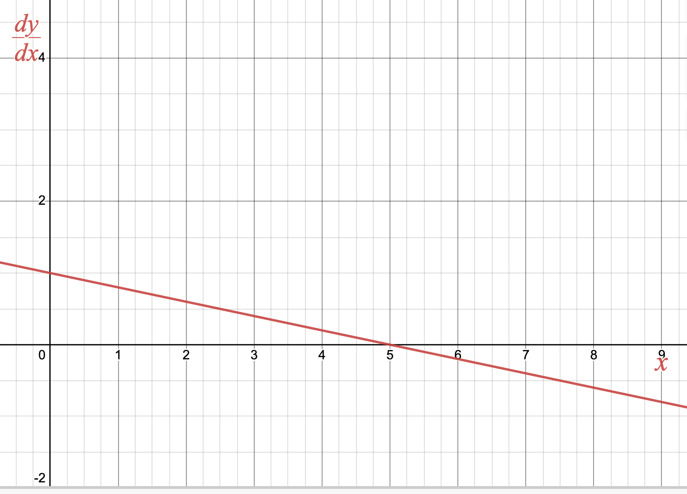
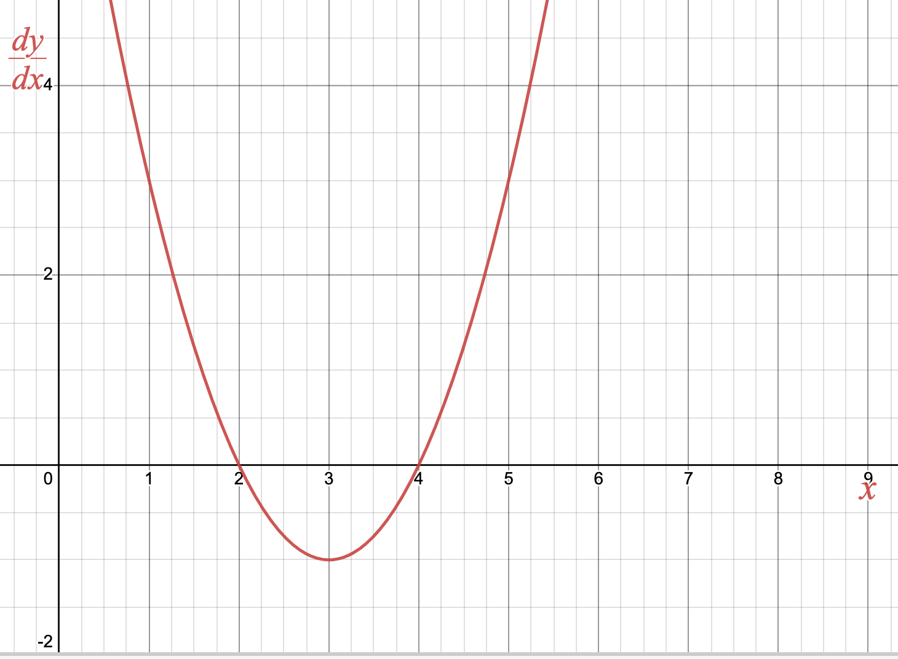

In
Section 1.7 we were introduced to
discrete-time dynamical systems, which describe systems of data taken at equally spaced intervals. These systems have an
updating function (which can be written as a
difference equation) that describes how the system’s average rate of change between discrete points behaves over time. If we have an
initial value for the system, we can describe an associated
solution function, which is an explicit description of how the system behaves over time.
For a discrete-time dynamical system, describing the average rate of change of the system makes sense since we have discrete points. However, if we are modeling continuous-time dynamical systems, we have enough data to describe the system’s instantaneous rate of change. Such models are called differential equations. Similar to discrete-time dynamical systems, given an initial value an important question is to describe the associated solution function.
Subsection 4.1.1 Differential Equations
A
differential equation is an equation that describes derivative values of a function that is unknown to us. For example, the equation
\(s'(t) = 4t + 1\) from
Warm-Up 4.1.1 is a differential equation which describes a function
\(s(t)\text{.}\) Note that
\(\dfrac{ds}{dt} = 4t+1\) is the same differential equation which uses a different notation for the first derivative. Differential equations are a very broad class of equations, and there are courses devoted to just this topic. As such, this text will only explore the basics of analyzing specific types of differential equations.
Example 4.1.1. Differential Equations.
\(\displaystyle s''(t) = -9.8\)
\(\displaystyle \dfrac{dA}{dt} = \cos\left(\frac{\pi}{12}t\right)\)
\(\displaystyle \dfrac{dP}{dt} = 0.03P\)
\(\displaystyle \dfrac{dy}{dx}= y - x\)
Equation
number 1 is a
second-order differential equation because the highest derivative involved is the second derivative. All other equations are an example of a
first-order differential equation since the highest derivative involved is the first derivative.
Equations
number 1 and
number 2 are
pure-time differential equations because the derivative value does not depend on the dependent variable (
\(s\) in
number 1 and
\(A\) in
number 2). It is common that differential equations are used to model relationships whose input quantity is “time”, which is why we will often use
\(t\) as the independent variable (and why we use the phrase “pure-time”). However, it is not required that time is the input quantity nor that we use
\(t\) as the independent variable, as shown in
number 4.
Equation
number 3 is an
autonomous differential equation because the derivative value depends on the dependent variable (
\(P\)), but not the independent variable (
\(t\)).
number 4 is neither pure-time nor autonomous because the derivative value depends on both the independent (
\(x\)) and dependent (
\(y\)) variables.
This text will largely focus on
first-order, pure-time differential equations. We will, however, describe some approximation techniques that will work for many types of differential equations in
Section 4.6.
We study differential equations because they arise naturally when describing phenomena that we observe in the real world. For instance:
To see many more examples of differential equations in use to describe real-world systems, take a moment to look back at the resources described in
Exercise 1.1.4.2.
Subsection 4.1.2 Solutions to Differential Equations and Antiderivatives
When working with a discrete-time dynamical system, an updating function was a convenient way to record observations. However, to analyze and understand the system being observed, it was often necessary to describe a solution function, which showed the explicit relationship between the input and output quantities of the system.
Similarly, when working with a continuous-time dynamical system, a differential equation is a convenient way to record how the system behaves. However, to analyze and understand the system, we would like to describe a solution. By a solution to a differential equation, we mean simply a function that satisfies this description.
For instance, the first differential equation we looked at in
Warm-Up 4.1.1 is
\begin{equation*}
\frac{ds}{dt} = 4t+1\text{,}
\end{equation*}
which describes an unknown function \(s(t)\text{.}\) We may check that \(s(t) =
2t^2+t\) is a solution because it satisfies this description:
\begin{equation*}
\frac{ds}{dt} = \frac{d}{dt}\left( 2t^2+t \right) = 4t + 1
\end{equation*}
Notice that \(s(t) = 2t^2+t+4\) is also a solution.
When working with pure-time differential equations, checking whether a function candidate is a solution resembles the process above: take the derivative of the function candidate, and check whether it matches the differential equation. We give solutions to pure-time differential equations a special name:
Definition 4.1.2.
Let \(f(x)\) and \(F(x)\) be functions such that \(F'(x) = f(x)\text{.}\) We say that \(F(x)\) is an antiderivative of \(f(x)\text{.}\)
We will focus on computing antiderivatives of various functions in
Section 4.2. For the remainder of this section, we will emphasize verifying and visualizing solutions to pure-time differential equations.
Activity 4.1.2.
Consider the differential equation \(\frac{dy}{dx} = e^{2x} - \sin(x) + \sqrt{x}\text{.}\)
Determine which function below is a solution to this differential equation:
\begin{equation*}
y=e^{2x}-\cos(x) + x^{\frac{3}{2}}
\end{equation*}
OR
\begin{equation*}
y=0.5e^{2x} + \cos(x)+ \frac{2}{3}x^{\frac{3}{2}}
\end{equation*}
Give an example of one more solution to the differential equation that is different from the solution in
part 1.
Suppose we also know \(y(0) = 2\text{.}\) How many solutions will satisfy this initial value condition? How do you know?
As we’ve seen, a differential equation in and of itself can describe many solution functions. Given a differential equation \(\frac{dy}{dt}\text{,}\) we call the family of all possible solutions \(y(t)\) the general solution of the differential equation. If we are also provided an initial value \(y(a)=b\) (note the initial value does not need to be the function’s value at \(0\)), then the differential equation/initial value pair will have one solution. A differential equation/initial value pair is called an initial value problem, which will have exactly one solution called the specific solution of the initial value problem.
Example 4.1.4. Initial Value Problem.
Consider the differential equation
\(\frac{ds}{dt} = 4t + 1\) from
Warm-Up 4.1.1. We can verify that the general solution to this differential equation is
\(s(t) = 2t^2 + t + C\text{,}\) where
\(C\) is any constant, by computing
\begin{equation*}
\frac{ds}{dt} = \frac{d}{dt}\left(2t^2 + t + C\right) = 4t + 1\text{.}
\end{equation*}
If we are instead given the initial value problem \(\frac{ds}{dt} = 4t + 1\text{,}\) \(s(1) =10\text{,}\) then we can find the specific solution by solving for \(C\text{:}\)
\begin{equation*}
10 = 2(1)^2 + 1 + C\text{,}
\end{equation*}
so
\begin{equation*}
C=10 - 2 - 1 = 7\text{.}
\end{equation*}
Activity 4.1.3.
For each graph of a differential equation \(\frac{dy}{dx}\) below, sketch two solution functions: one with initial value \(y(0) =0\) and one with initial value \(y(0)=2\text{.}\)

